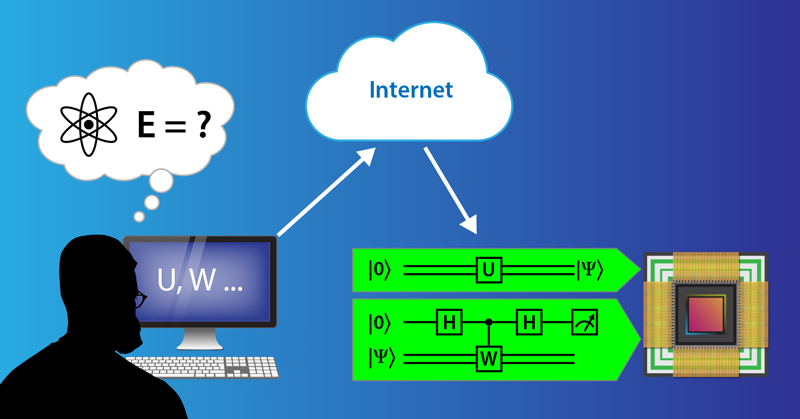
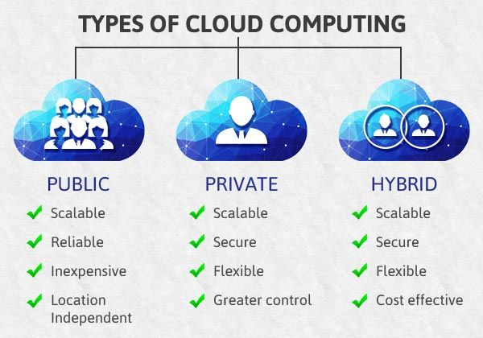
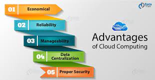
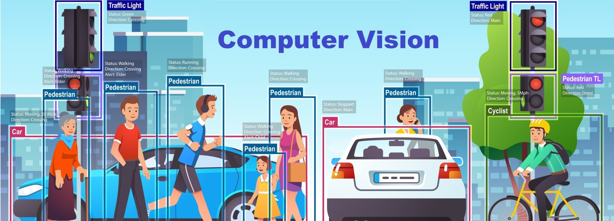

<!DOCTYPE html>
<html lang="en">

<head>
  <meta charset="utf-8">
  <meta content="width=device-width, initial-scale=1.0" name="viewport">

  <title>Portfolio Details</title>
  <meta content="" name="description">
  <meta content="" name="keywords">

  <!-- Favicons -->
  <link href="/asset/img/apple-touch-icon.png" rel="icon">
  <link href="/asset/img/apple-touch-icon.png" rel="apple-touch-icon">

  <!-- Google Fonts -->
  <link href="https://fsonts.googleapis.com/css?family=Open+Sans:300,300i,400,400i,600,600i,700,700i|Raleway:300,300i,400,400i,500,500i,600,600i,700,700i|Poppins:300,300i,400,400i,500,500i,600,600i,700,700i" rel="stylesheet">

  <!-- Vendor CSS Files -->
  <link href="assets/vendor/aos/aos.css" rel="stylesheet">
  <link href="assets/vendor/bootstrap/css/bootstrap.min.css" rel="stylesheet">
  <link href="assets/vendor/bootstrap-icons/bootstrap-icons.css" rel="stylesheet">
  <link href="assets/vendor/boxicons/css/boxicons.min.css" rel="stylesheet">
  <link href="assets/vendor/glightbox/css/glightbox.min.css" rel="stylesheet">
  <link href="assets/vendor/swiper/swiper-bundle.min.css" rel="stylesheet">

  <!-- Template Main CSS File -->
  <link href="assets/css/style.css" rel="stylesheet">


</head>

<body>
  
  <!-- ======= Mobile nav toggle button ======= -->
  <i class="bi bi-list mobile-nav-toggle d-xl-none"></i>

  <!-- ======= Header ======= -->
  <header id="header">
    <div class="d-flex flex-column">

      <nav id="navbar" class="nav-menu navbar">
        <ul>
          <li><a href="#qc" class="nav-link scrollto active"><i class="bx bx-card"></i> <span>Quantum Computing</span></a></li>
          <li><a href="#autonomic" class="nav-link scrollto"><i class="bx bx-grid"></i> <span>Autonomic Computing</span></a></li>
          <li><a href="#vision" class="nav-link scrollto"><i class="bx bx-cloud"></i> <span>Computer Vison</span></a></li>
         
        </ul>
      </nav><!-- .nav-menu -->
    </div>
  </header><!-- End Header -->
  
  <main id="main">

    <!-- ======= Breadcrumbs ======= -->
    <section id="breadcrumbs" class="breadcrumbs">
      <div class="container">

        <div class="d-flex justify-content-between align-items-center">
          <h1>OTHER EMERGING  TECHNOLOGIES</h1>
          <ol>
            <li><a href="index.html">Home</a></li>
            <li>Portfoio Details</li>
          </ol>
        </div>

      </div>
    </section><!-- End Breadcrumbs -->

    <!-- ======= Portfolio Details Section ======= -->
    <section id="portfolio-details" class="portfolio-details">
      <div class="container">

        <div class="row gy-4">

          <div class="col-lg-8">
            <div class="portfolio-details-slider swiper">
              <div class="swiper-wrapper align-items-center">

                <div class="swiper-slide">
                  
                </div>

                <div class="swiper-slide">
                  
                </div>

                <div class="swiper-slide">
                  
              </div>
              </div>
              <div class="swiper-pagination"></div>
            </div>
          </div>
          <div class="col-lg-4">
            <div class="portfolio-info">
              <h3>What is Emerging Technologies?</h3>
              <p>
                Emerging technologies are technologies whose development, practical applications, or both are still largely unrealized. These technologies are generally new but also include older technologies finding new applications. Emerging technologies are often perceived as capable of changing the status quo.
              </p>
            </div>
          </div>
        </div>
      </div>
    </section><!-- End Portfolio Details Section -->
    <!--COMPUTING QUANTUM-->
    <section id="qc">
        <div class="qc">
    <h1>CLOUD AND QUANTUM COMPUTING</h1>
    <h2>Cloud computing</h2>
    <p>Cloud computing services can focus on infrastructure, web development or a cloud-based app. These 
      are often regarded as a stack; all are on-demand, pay-as-you-go. Infrastructure as a Service (IaaS) 
      gives you management of the whole deal: servers, web development tools, applications. Platform as 
      a Service (PaaS) offers a complete web development environment, without the worry of the hardware 
      that runs it.</p>
  
        <h2>Quantum Computing</h2>
            <p>A multidisciplinary field comprising aspects of computer
            science, physics, and mathematics that utilizes quantum
            mechanics to solve complex problems faster than on
            classical computers.Quantum computers truly do represent the next generation of computing. Unlike classic 
            computers, they derive their computing power by harnessing the power of quantum physics. 
            Because of the rather nebulous science behind it, a practical, working quantum computer still 
            remains a flight of fancy.
            </p>

            <h2>Cloud</h2>
        <p> Cloud is a model of computing where servers, 
            networks, storage, development tools, and even 
            applications (apps) are enabled through the internet.</p><br>
        </div>
      </section>
   <div class="infrastructure">
    <h2>Types of Cloud Infrastructure</h2>
    <ul><br>
        <li>Public Cloud   </li>
            <p>Connecting to a public cloud means using an internet
                connection to access computing resources hosted on data
                centers managed by a third-party cloud service provider,
                rather than owning and maintaining these resources on-premise. A shared public cloud has many organizations (or
                tenants) sharing the same infrastructure.</p><br>
        <li>Private Cloud   </li>
            <p>This cloud model is great for organizations concerned about
                sharing resources on a public cloud. It is implemented on
                servers owned and maintained by the organization and
                accessed over the internet or through a private internal
                network.
                </p><br>
        <li>Hybrid Cloud   </li>
            <p>Combination of public cloud and private
                cloud, frequently in combination with some
                on-premise infrastructure. It could also
                combine a public cloud with another public
                cloud (multicloud).
                </p><br>
    </ul>
    
    
   </div>

   <!--autonomic -->
   <section id="autonomic">
    <div class="autonomic">
        <h1>AUTONOMIC COMPUTING</h1>
        <p> A computer’s ability to manage itself automatically through
            adaptive technologies that further computing capabilities and
            cut down on the time required by computer professionals to
            resolve system difficulties and other maintenance such as
            software updates. Autonomic computing (AC) is an approach to address the complexity and evolution problems in 
            software systems. It is a self-managing computing model named after, and patterned on, the human 
            body's autonomic nervous system. An autonomic computing system would control the functioning 
            of computer applications and systems without input from the user, in the same way, that the 
            autonomic nervous system regulates body systems without conscious input from the individual.
        </p>

        <h2> Characteristics of Autonomic Systems</h2>
        <p>An autonomic system can self-configure at runtime to meet changing operating environments, selftune to optimize its performance, self-heal when it encounters unexpected obstacles during its 
          operation, and of particular current interest. Protect itself from malicious attacks. An autonomic 
          system can self-manage anything including a single property or multiple properties </p>

          <ul>
            <li><b>Self-Awareness:</b> An autonomic application/system “knows itself” and is aware of its state 
              and its behaviors.</li>
            <li><b>Self-Configuring: </b>An autonomic application/system should be able to configure and 
              reconfigure itself under varying and unpredictable conditions.</li>
            <li> <b>Self-Optimizing:</b> An autonomic application/system should be able to detect suboptimal 
              behaviors and optimize itself to improve its execution.</li>
            <li><b>Self-Healing:</b>An autonomic application/system should be able to detect and recover from 
              potential problems and continue to function smoothly.</li>
            <li><b>Self-Protecting:</b>An autonomic application/system should be capable of detecting and 
              protecting its resources from both internal and external attacks and maintaining overall 
              system security and integrity. </li>
            <li><b> Context-Aware:</b>An autonomic application/system should be aware of its execution 
              environment and be able to react to changes in the environment. </li>
            <li><b>Open: </b>An autonomic application/system must function in a heterogeneous world and 
              should be portable across multiple hardware and software architectures. Consequently, it 
              must be built on standard and open protocols and interfaces. </li>
            <li><b>Anticipatory:</b>An autonomic application/system should be able to anticipate to the extent 
              possible, its needs and behaviors and those of its context, and be able to manage itself 
              proactively
              </li><br><br>
          </ul>
    </div>
   </section>

   <section id="vision">
    <div class="vision">
      <h1>Computer Vision</h1>
    </div>
    <div class="definition">
      <h2>What is Computer Vision?</h2>
      <p>It is an interdisciplinary scientific field that deals with how computers can be made to gain a highlevel understanding of digital images or videos. From the perspective of engineering, it seeks to 
        automate tasks that the human visual system can do. 
        Computer vision tasks include methods for acquiring, processing, analyzing and understanding 
        digital images, and extraction of high-dimensional data from the real world in order to produce 
        numerical or symbolic information, e.g. in the forms of decisions. Understanding in this context 
        means the transformation of visual images (the input of the retina) into descriptions of the world 
        that can interface with other thought processes and elicit appropriate action. This image 
        understanding can be seen as the disentangling of symbolic information from image data using 
        models constructed with the aid of geometry, physics, statistics, and learning theory. </p>
        
    </div>
    <div class="history2">
      <h2>History</h2>
      <p>The origins of computer vision go back to an MIT undergraduate summer project in 1966. It was 
        believed at the time that computer vision could be solved in one summer, but we now have a 50-
        year old scientific field that is still far from being solved.
        Early experiments in computer vision took place in the 1950s, using some of the first neural 
        networks to detect the edges of an object and to sort simple objects into categories like circles and 
        squares. In the 1970s, the first commercial use of computer vision interpreted typed or handwritten 
        text using optical character recognition. This advancement was used to interpret written text for 
        the blind. As the internet matured in the 1990s, making large sets of images available online for 
        analysis, facial recognition programs flourished. These growing data sets helped make it possible 
        for machines to identify specific people in photos and videos.</p>
    </div>
   </section>

</div>
</section>
<!--FOOTER-->
  <footer id="footer">
    <div class="container">
      
      <div class="credits">
      </div>
    </div>
  </footer><!-- End  Footer -->

  <a href="#" class="back-to-top d-flex align-items-center justify-content-center"><i class="bi bi-arrow-up-short"></i></a>

  <!-- Vendor JS Files -->
  <script src="assets/vendor/purecounter/purecounter_vanilla.js"></script>
  <script src="assets/vendor/aos/aos.js"></script>
  <script src="assets/vendor/bootstrap/js/bootstrap.bundle.min.js"></script>
  <script src="assets/vendor/glightbox/js/glightbox.min.js"></script>
  <script src="assets/vendor/isotope-layout/isotope.pkgd.min.js"></script>
  <script src="assets/vendor/swiper/swiper-bundle.min.js"></script>
  <script src="assets/vendor/typed.js/typed.min.js"></script>
  <script src="assets/vendor/waypoints/noframework.waypoints.js"></script>
  <script src="assets/vendor/php-email-form/validate.js"></script>

  <!-- Template Main JS File -->
  <script src="assets/js/main.js"></script>

</body>

</html>